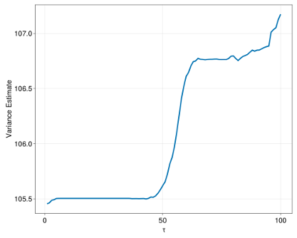

Correcting for population relatedness (Experimental)
If the i.i.d. (independent and identically distributed) hypothesis is not satisfied, most of the traditional statistical inference theory falls apart. This is typically possible in population genetics where a study may contain related individuals. Here we leverage a non-parametric method called Sieve Variance Plateau (SVP) estimation. The hypothesis is that the dependence between individuals is sufficiently small, so that our targeted estimator will still be asymptotically unbiased, but its variance will be under estimated. In brief, the SVP estimator computes a variance estimate for a range of thresholds $\tau$, by considering individuals to be genetically independent if their genetic distance exceeds $\tau$. The genetic distance between a pair of individuals $(i, j)$ equals $1 − GRM_{i,j}$ , i.e., one minus their genetic relatedness value. As the distance threshold $\tau$ increases, fewer individuals are assumed to be genetically independent. For instance, the estimate corresponding to a distance of $\tau = 0$ corresponds to the i.i.d. hypothesis, while a distance of $\tau = 1$ incorporates pairs of individuals who are not genetically correlated. TarGene varies the threshold $\tau$ from 0 to 1 and fits a curve to the corresponding variance estimates. The maximum of this curve is the most conservative estimate of the variance estimator and constitutes the corrected variance estimator. To illustrate, an example of curve is presented below.

The following arguments can be changed to control the behaviour of the pipeline:
SVP(default: false): Must be set to true to enable variance adjustement.ESTIMATOR_KEY(default: 1): Either the name of an estimator fromESTIMATORS_CONFIGor an integer, indicating which estimator's results will be used for adjustment.GRM_NSPLITS(default: 100): This is a purely computational argument. The GRM is typically very large and splitting enables a good memory/parallelization tradeoff.MAX_SVP_THRESHOLD(default: 0.8): Controls the maximum genetic distance considered.NB_SVP_ESTIMATORS(default: 100): Controls the number of points in the interval [0,MAX_SVP_THRESHOLD]. If 0, the Sieve Variance Plateau method will not be applied.PVAL_THRESHOLD(default: 0.05): Only estimates with a p-value lower thanPVAL_THRESHOLDwill be considered for SVP correction. This is because SVP will only increase the variance of the estimator.
The sieve variance plateau estimation will use memory mapping to avoid using too much RAM. On some platforms this is not allowed and will lead to massive memory consumption. With the UK Biobank this is around 500GB. The process also mostly revolves around matrix multiplication so that multithreading can improve the performance. With Nextflow you can control resources at the process level, for instance you could add the following to your config file.
process{
withName: SVP {
memory = { 500.GB }
cpus = 10
}
}